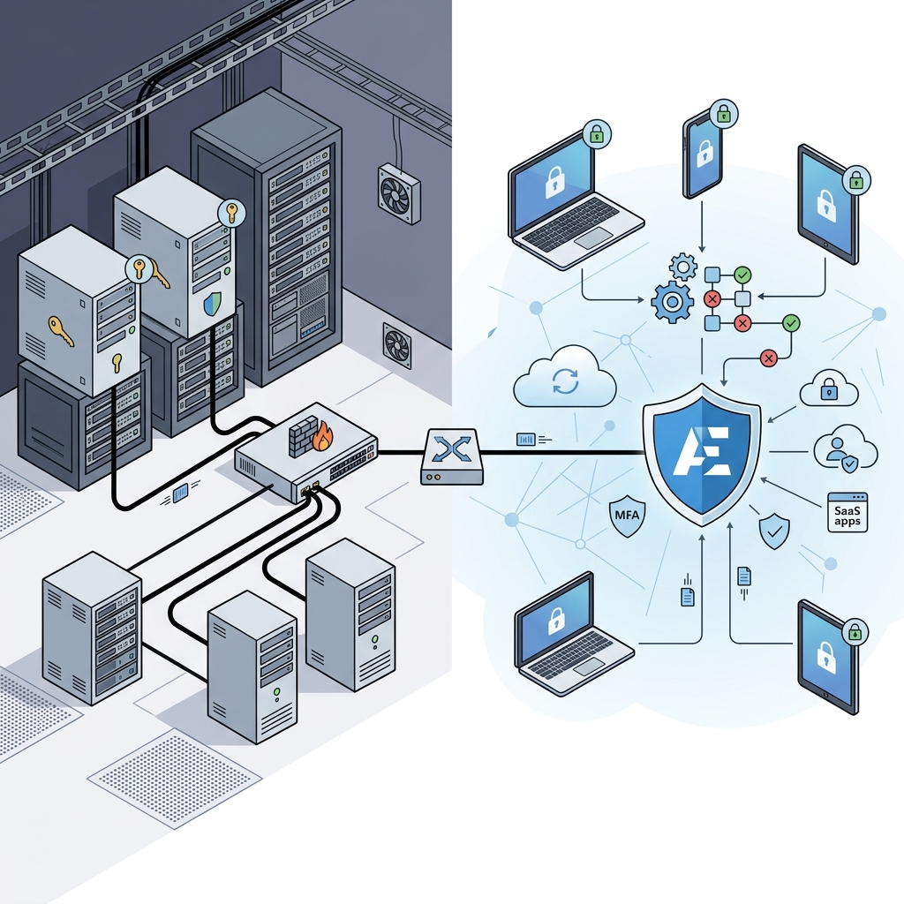

Active Directory vs Entra ID Security 2026: The Great Identity Paradigm Shift
How security controls move from the Enterprise Admin to the Cloud Provider, the real risk of single points of failure, and the ultimate migration playbook for 2026.

1. Introduction: The Death of the Perimeter
For over two decades, the security industry relied on the "castle-and-moat" paradigm. If a user was physically sitting in the office connected to the LAN, authenticated against a local Domain Controller (DC), they were deemed trustworthy. The network perimeter was the ultimate line of defense.
The transition from on-premises Active Directory (AD) to cloud-native Microsoft Entra ID (formerly Azure AD) completely obliterates this model. Today, the network is untrusted by default. The identity itself has become the perimeter.
In the modern Entra ID paradigm, every access request must be explicitly verified regardless of where the request originates. Trust is evaluated dynamically based on device health, user risk, and location—not IP address alone.
At a Glance: AD vs Entra ID Paradigm Shift
| Element | On-Premises Active Directory | Microsoft Entra ID (Cloud) |
|---|---|---|
| Core Perimeter | The physical/corporate network boundary (Firewalls, LAN) | The Identity and Device state (Zero Trust) |
| Management Model | Enterprise Admin controls the infrastructure (OS, servers, patching) | Tenant Admin controls policies; Microsoft controls infrastructure |
| Authentication Protocols | Kerberos, NTLM, LDAP | OAuth 2.0, OpenID Connect (OIDC), SAML 2.0 |
| Primary Attack Surface | Pass-the-Hash, Kerberoasting, DC replication abuse | Consent phishing, Pass-the-Cookie, OAuth App abuse, MFA fatigue |
2. Core Architecture Comparison
Active Directory was built in a time of flat networks and trusted domains. It utilizes LDAP (Lightweight Directory Access Protocol) for queries and Kerberos or NTLM for authentication. It heavily relies on DNS to locate domain controllers. It is fundamentally a hierarchical, X.500-based structure consisting of Domains, Trees, and Forests.
Entra ID is not Active Directory in the cloud. It is a flat, HTTP-based, multi-tenant directory service. It does not use OUs (Organizational Units), GPOs, or Kerberos. It communicates exclusively via web-friendly protocols like OAuth 2.0, SAML, and OpenID Connect, and relies on the Microsoft Graph API for queries and management.
3. The Shared Responsibility Model & Vendor Control
When you run on-prem AD, you own everything. If a server goes down, you reboot it. If a vulnerability is found, you patch it. You hold the proverbial keys to the kingdom.
Moving to Entra ID shifts the burden of physical hardware, network availability, and database security to Microsoft. This is the Shared Responsibility Model.
By delegating infrastructure to Microsoft, you create absolute vendor dependency. If Microsoft's authentication backbone suffers a catastrophic bug, you cannot "fix" it. Your ability to operate is entirely dependent on Microsoft's SLA. Furthermore, entangling your entire SaaS ecosystem into Entra ID makes migrating away functionally impossible for most large enterprises.
4. Granular Controls: From GPOs to Conditional Access
In the AD world, Group Policy Objects (GPOs) ruled supreme. They configured registry keys, mapped drives, and enforced password policies based on OUs.
In Entra ID, device management shifts to Intune (MDM), and access control shifts to Conditional Access (CA). Conditional Access acts as an intelligent "if-then" engine evaluating every authentication request.
| Feature | On-Premises AD | Entra ID |
|---|---|---|
| Policy Enforcement | GPOs (applied at login/refresh intervals) | Conditional Access (evaluated dynamically per session) |
| Privileged Access | Domain Admins, Enterprise Admins (Persistent) | Privileged Identity Management (PIM) (JIT, time-bound) |
| Device Trust | Domain Joined | Intune Compliant / Hybrid Joined |
| Misconfiguration Risk | Open file shares, overly broad GPO links | Excluding accounts from MFA, bad CA rule overlapping |
5. The CIA Triad Impact: When the Cloud Fails
The centralization of identity creates a massive shift in how we view the CIA Triad (Confidentiality, Integrity, Availability). Entra ID is essentially a global Single Point of Failure (SPOF).
Availability: The 2024-2026 Outages
In the past, if a local DC went down, a secondary DC in the same site would seamlessly take over. But what happens when the global Azure front door fails? Recent incidents in late 2024 and mid-2025 demonstrated that when the Entra ID control plane experiences an outage, it creates a cascading failure. Not only do users lose access to email and Teams, but they also lose access to AWS, Salesforce, and HR systems because Entra ID acts as the sole identity provider (IdP).
Confidentiality & Integrity: The New Attack Vectors
- Pass-the-Cookie / Token Theft: Attackers no longer need passwords. If they steal a valid session token from a user's browser, they bypass MFA entirely.
- Consent Phishing: Instead of tricking users into giving up passwords, attackers trick users into granting malicious OAuth "App Registrations" permission to read their emails or access SharePoint files.
- AiTM (Adversary-in-the-Middle): Proxies like Evilginx intercept the authentication flow, capturing both the credentials and the MFA session token in real-time.
6. Security Tools & Monitoring Reality
In an on-prem world, monitoring meant pulling event logs (like Event ID 4624) from Domain Controllers into a local SIEM like Splunk. In the cloud, the visibility paradigm changes.
Microsoft pushes organizations toward its proprietary security stack: Microsoft Defender for Identity (for hybrid AD monitoring), Entra ID Protection (for detecting risky sign-ins), and Microsoft Sentinel (the cloud-native SIEM).
While Microsoft provides native logs (Sign-in logs, Audit logs), exporting these logs to a third-party SIEM (like Splunk or Datadog) via Event Hubs incurs significant egress and ingestion costs. Microsoft explicitly designs its ecosystem to make keeping data inside Sentinel the most cost-effective path, further cementing vendor lock-in.
7. Migration Security Playbook
A secure migration from AD to Entra ID requires meticulous planning. Moving too fast can expose your directory to the internet; moving too slow leaves legacy protocols vulnerable.
The Cutover Checklist
- Implement Break-Glass Accounts: Create two highly monitored, cloud-only Global Administrator accounts (e.g.,
emerg.admin@yourdomain.onmicrosoft.com). Exclude these from conditional access rules to prevent locking yourself out if a CA policy breaks or MFA services go down. - Disable Legacy Authentication: Block IMAP, POP3, and legacy MAPI globally via Conditional Access to kill 99% of password-spraying attacks.
- Tiered Administration: Implement the Enterprise Access Model. Ensure that users syncing from on-prem AD cannot escalate privileges to Entra ID Global Admin roles.
- Review App Registrations: Audit all Enterprise Applications. Remove apps with "Read/Write All Directory" permissions that lack a clear business owner.
8. How Security Teams Must Adapt
The role of the Security Engineer is shifting from network engineering and patch management to Identity Threat Detection and Response (ITDR).
Teams must learn to hunt for anomalous OAuth grants, investigate impossible travel alerts within Entra ID Protection, and write KQL (Kusto Query Language) queries to trace token theft across Azure logs. The focus is no longer on scanning IPs for open ports, but rather querying APIs for excessive permissions.
9. Decision Framework: Stay AD or Move to Entra ID?
For almost every organization moving forward, the answer is Entra ID. However, the path there varies:
- Startups / Cloud-First: Go 100% cloud-native Entra ID immediately. Avoid on-prem AD entirely.
- Mid-to-Large Enterprises: Operate a Hybrid environment. Keep on-prem AD for legacy manufacturing systems, local file shares, and OT networks, but migrate all user identities and M365 access to Entra ID.
- Air-Gapped / High Security Gov: Rely on isolated on-prem Active Directory forests where internet connectivity is strictly prohibited.
10. Future Outlook 2027–2028
Looking ahead, Microsoft will continue deprecating legacy protocols like NTLM. We expect a massive push toward Continuous Access Evaluation (CAE), where token revocation happens in near real-time if a user’s risk changes, and an aggressive push towards FIDO2/Passkeys, ultimately making passwords obsolete.
Security engineers must accept that the cloud identity plane is the new battlefield. Securing it requires treating API configurations with the same reverence we once treated the enterprise firewall.